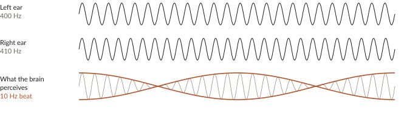

An open-source tone generator for brainwave entrainment and sound research, with exact frequencies you can share and repeat.
Soulwhistle is a real-time synthesizer that runs in the terminal. It plays binaural beats and layered signals with precise, reproducible frequencies, and stores every session as a plain JSON preset, so anyone can rerun it, inspect it, or check the numbers.

How a binaural beat works: each ear hears a slightly different pure tone, and the difference (here 10 Hz) is perceived as a slow pulse. Headphones required. Waves drawn scaled down for clarity.
What it plays
Binaural beats from 0.1 to 50 Hz, covering delta, theta, alpha, beta and gamma
Extra layers: a 7.83 Hz modulated carrier, 528 and 432 Hz tones, chirps, breathing noise and an ultrasonic ping
Tinnitus notched noise, centred on the pitch you match by ear
Sessions in phases: start-up, induction, stabilisation and return
Optional radio output through a HackRF One, for licensed experiments
Presets included
Focus 10, 12, 15 and 21, from frequency analysis of Monroe Institute recordings
Deep focus at 10, 14 and 18 Hz, and an experimental 40 Hz gamma
40 Hz sound pulses as used in the gamma studies (1 ms tones at 10 kHz), experimental
Tinnitus notch therapy
Ultrasonic and exploratory presets, each clearly marked experimental
Built for clean sound
The audio thread never waits, allocates memory or writes to disk, so playback does not glitch
Square, saw and triangle waves are band-limited: no false tones folding back into the audible range
The tinnitus notch cuts at least 30 dB across its whole width
Runs at the sound card's own sample rate, and says so when a frequency is too high to play
Record and share
One key records the session to a WAV file
Lossless network stream as FLAC, or WAV in 16‑bit, 24‑bit or 32‑bit float, to VLC, mpv or a browser
AirPlay speakers and multi-room audio through PipeWire and Snapcast
Honest about the evidence
Research on binaural beats is mixed: meta-analyses report small to moderate effects on attention, memory and anxiety, while EEG studies disagree on whether the brain actually follows the beat. Soulwhistle is a research instrument, not a medical device. Research presets cite their sources, and exploratory ones are labelled experimental.
Install cargo install soulwhistle
Source and citations
github.com/soulwhistle-project/soulwhistle
Contact
soulwhistle@pm.me
Code under the Apache License 2.0. Presets and documentation under CC BY 4.0. Not intended to diagnose, treat or prevent any condition.